はい、皆さんこんにちは。TAKUYAです。今回はですね、これから20年で起こるAI革命というテーマで、音声付きの電子書籍を作ってみました。
この本、僕の声で読み上げが自動で進んで、今読んでいるところに、蛍光ペンみたいに色がついて、ページも勝手にめくれていきます。読み上げの速度は下のバーで変えられますし、図解はクリックすると大きく表示できます。なので皆さんは、聴きながら眺めているだけでOKです。
それでは、いきましょう。
で、本題に入る前にですね、皆さん、こういうことありませんか。AIのニュースが毎日流れてきて、なんとなく焦る。でも、じゃあ明日から何をすればいいのかは、誰も教えてくれない。
新しいツールの名前だけがどんどん増えていって、気づいたら何も変わっていない。実はこれ、すごく多いんですよ。僕のところにも、AIの勉強って何から始めればいいですか、っていう質問が本当にたくさん来ます。
で、先に僕の話を少しだけさせてください。今でこそAIとか自動化を教える仕事をして、YouTubeも17万人の方に登録していただいてるんですけれども、数年前の僕は本当にひどかったです。毎日20時まで残業して、上司にはこんなのもできないのかと言われて、悔しくてトイレで泣いたこともあります。
ストレスで持病が悪化して、入院までしました。ITも苦手で、そもそもExcelすら苦手なレベルだったんですね。
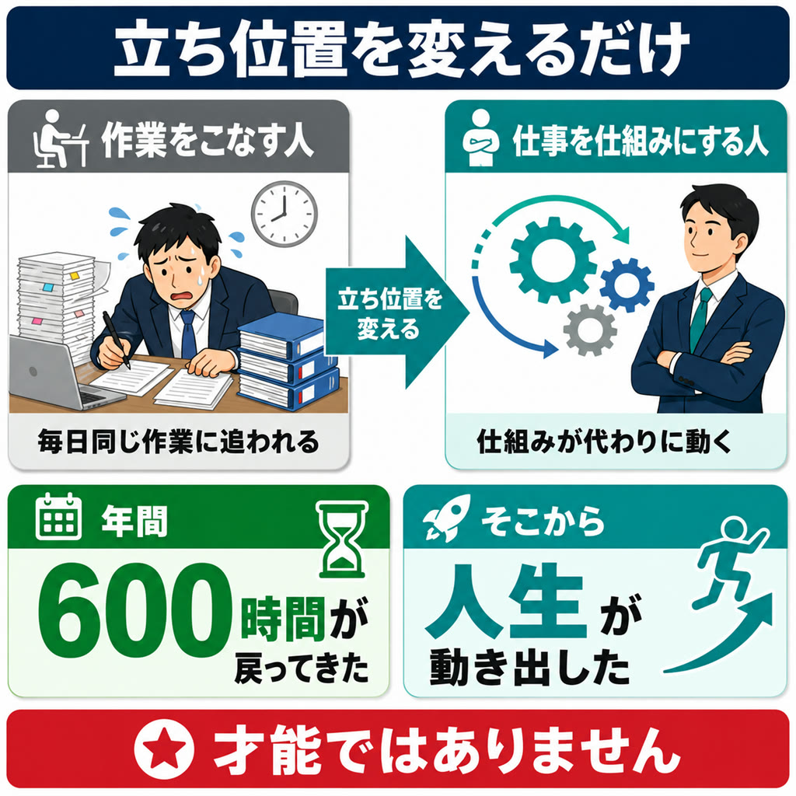
じゃあ、そんな僕がなんで変われたのか。才能じゃないんですよ。たった一つ、作業をこなす人から、仕事を仕組みにする人に、立ち位置を変えただけなんです。
VBAという、Excelを自動で動かすスキルを一つ覚えて、毎日の作業をちょっとずつ自動化していきました。その結果、年間で大体600時間ぐらいの時間が返ってきて、そこから人生が動き出したんですね。この本で伝えたいことも、突き詰めるとそこだけです。
ちなみに600時間って、1日に直すと2時間半ぐらいですね。それが毎日返ってきた感じです。
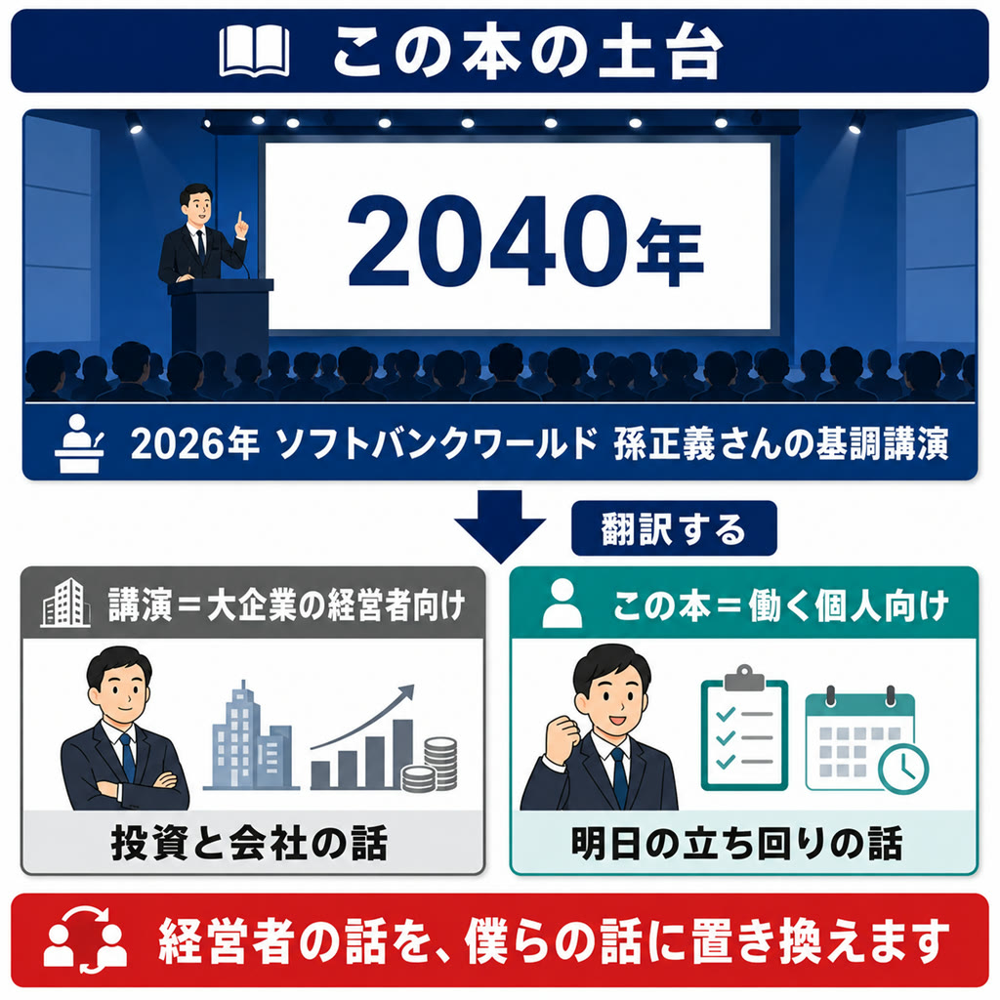
で、この本には、はっきりした土台があります。2026年のソフトバンクワールドという場で、孫正義さんが2040年の世界について語った基調講演です。2040年って、今から大体15年後ですね。
これがですね、僕が今まで聞いた未来の話の中で、ダントツで具体的だったんですよ。ただ、あの講演は大企業の経営者に向けた話なんですね。投資の話で、会社の話なんです。
なので僕は、あれを、働く個人の話に置き換えてみたいと思ったんですね。それがこの本です。ちなみに基調講演というのは、その日のメインになる、トップの人の話のことですね。
で、先に結論を言っておきますね。15年後に効いてくるのは、AIにどれだけ詳しいかじゃないんですよ。立ち位置です。
作業する側にいるのか、任せる側にいるのか。ここだけなんですね。これから前半で孫さんの予測をご紹介して、後半で、じゃあ僕ら個人はどう立ち回るのかという話を、5つに分けてお伝えします。
ここだけは、覚えておいていただけたらなと思います。
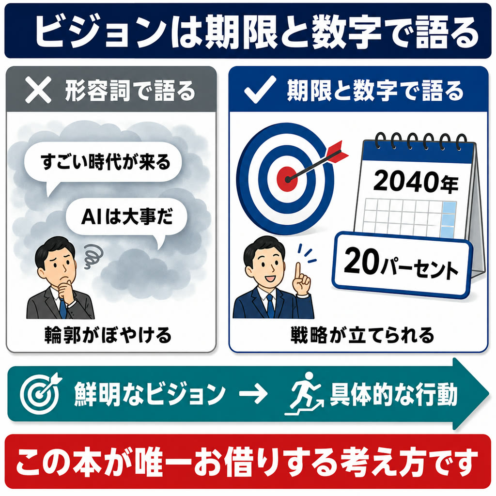
じゃあ、孫さんの話に入っていきます。まず、あの講演で僕が一番なるほどと思ったのが、この考え方なんですよ。ビジョンというのは、期限と数字で語るものだと。
AIは大事だ、これからすごい時代が来る、みたいなふわっとした言葉で語っているうちは、はっきりしたビジョンにはならないと。いつ、どのくらい、という輪郭がないと、そこから戦略が立てられないんですね。で、孫さんはこのあと、実際に全部を数字で語っていきます。
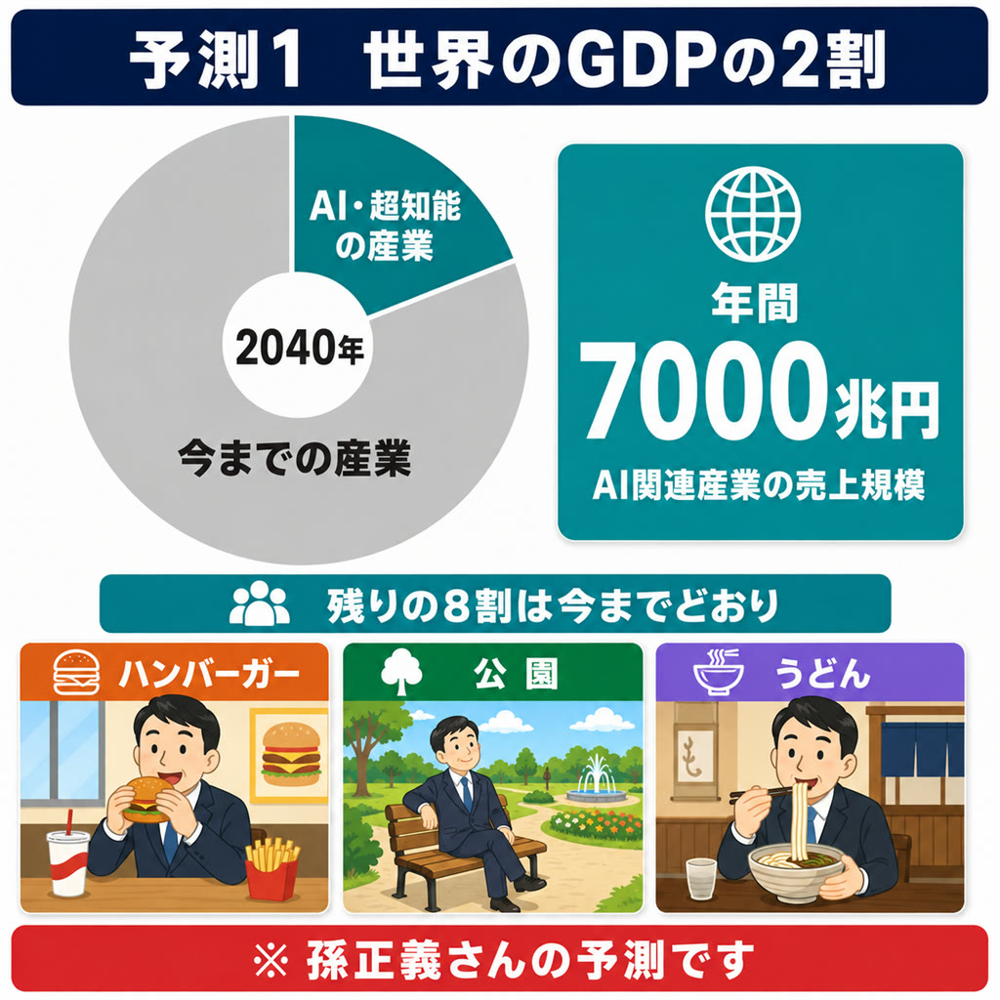
一つ目の予測です。孫さんはこう言っています。2040年には超知能、つまり人間をはるかに超えるAIですね。
これに関わる産業だけで、世界のGDPの約20パーセントを占めるようになる、と。売上でいうと年間7000兆円という規模ですね。ここで面白いのが、逆に言うと残りの80パーセントは、今までの産業とそんなに変わらないという見立てなんですよ。
15年後もハンバーガーは食べているし、週末には公園にも行くと。この80パーセントの話は、あとでもう一度出てきます。あとGDPというのは、世界中で1年間に生まれたお金の合計のことですね。
その2割がAIの側にいく、という話なんですよ。
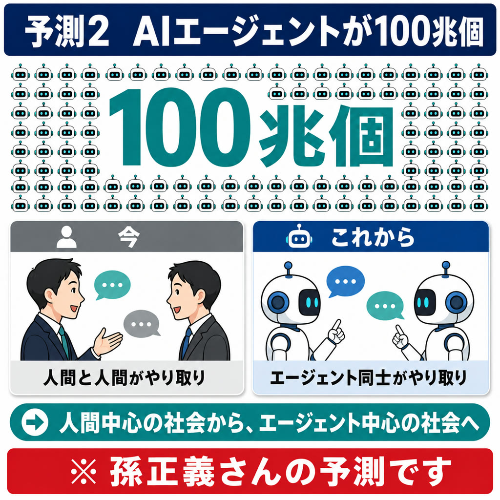
二つ目です。AIエージェント、つまり自分で判断して動くAIが、100兆個という規模で地球上に広がる、と孫さんは話されていました。しかもそれが、人間を通さないで、エージェント同士で会話をし始めると。
今は人間と人間がやり取りしている世界ですけれども、それがエージェントとエージェントのやり取りに置き換わっていくという話なんですね。人間中心の社会から、エージェント中心の社会へ、という表現をされていました。エージェントというのは、一度頼んだら段取りまで自分でやってくれるAIのことなんですね。
例えば、僕の予定を見て会議室まで押さえてくれる係、みたいなイメージです。
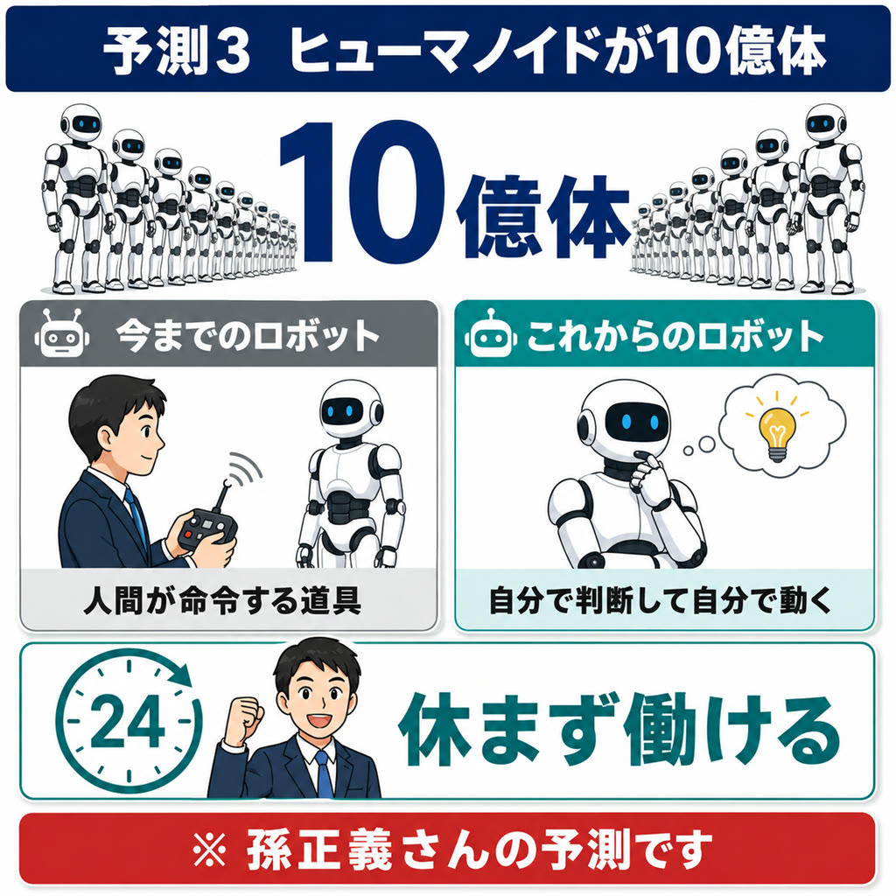
三つ目です。人型のロボット、ヒューマノイドが10億体規模で生まれると。ここが今までのロボットと決定的に違うのは、人間がプログラムして動かす道具ではなくて、自分で判断して、自分で動くという点なんですね。
24時間動けるので、人間の労働に換算すると、もっと大きな規模になるという話ですね。肉体労働の主役が、人類からロボットに移るという予測です。正直、聞いたときはちょっと現実感がなかったんですけれども、根拠は次のページの数字です。
ロボットは休まないので、人の頭数でいうと何倍にもなる、という意味なんですね。
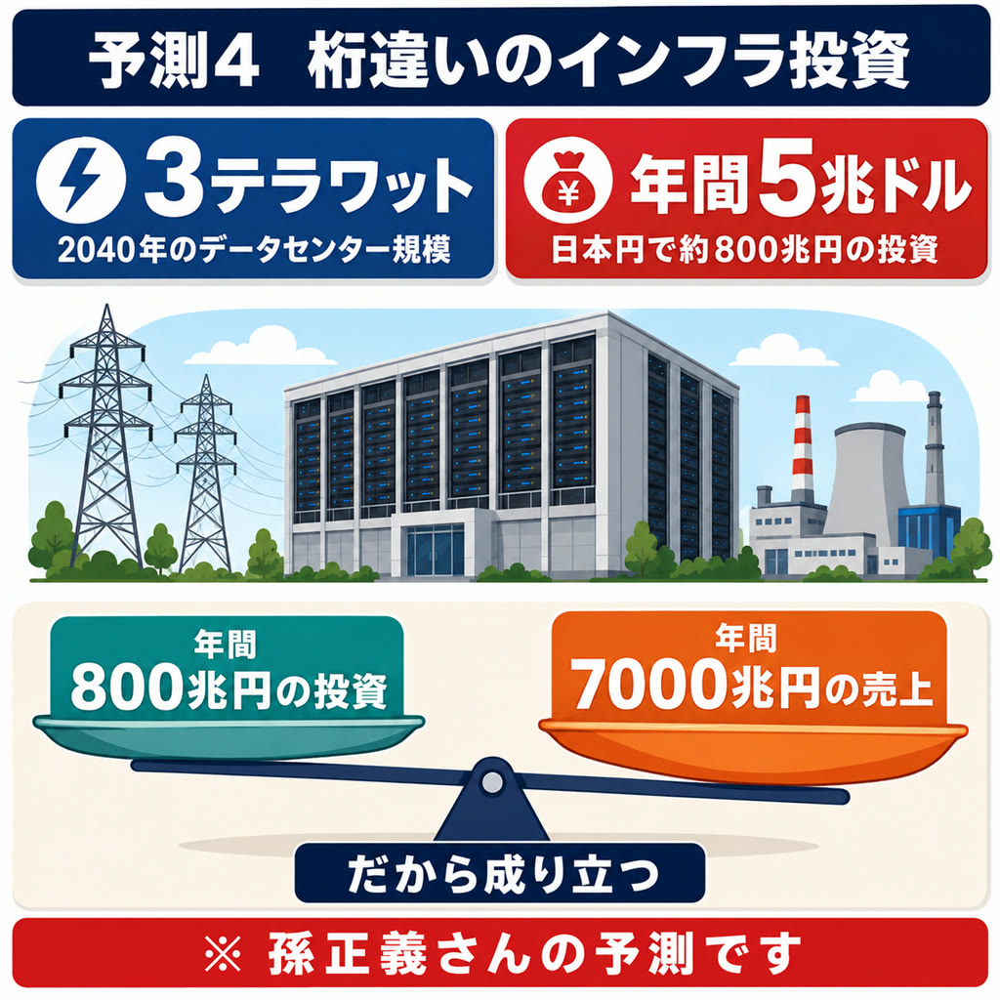
四つ目です。それだけのAIを動かすには、とんでもない量のコンピューターと電力が要ります。孫さんは、2040年のデータセンターは3テラワット、ちょっと想像もつかない規模になって、そこに毎年5兆ドル、日本円で約800兆円の投資が必要になるという話でした。
毎年800兆円ですよ。普通に聞くとバブルにしか聞こえないんですけれども、さっきの年間7000兆円の売上があるなら、十分に成り立つ計算なんだと。ここは聞いていて、素直にすごいなと思いましたね。
データセンターというのは、AIを動かすコンピューターを何万台も置いた建物のことですね。毎年800兆円かけても7000兆円返ってくるなら、ちゃんと元は取れる、という計算なんですよ。
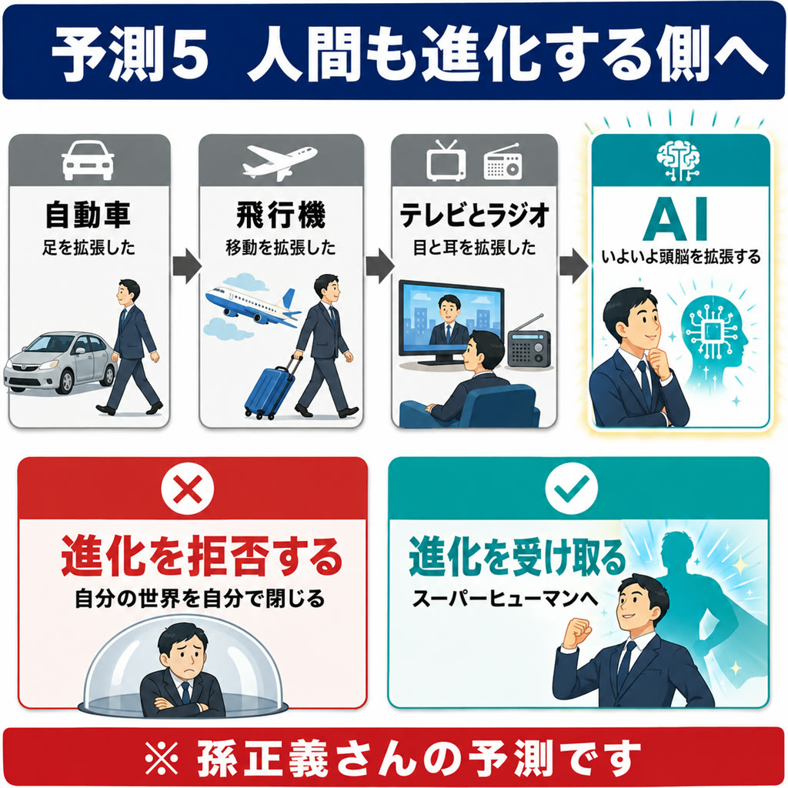
五つ目、最後です。孫さんは、人間もスーパーヒューマンになるしかない、という言い方をされていました。人類はこれまでも、車で足を、飛行機で行動範囲を、テレビやラジオで目と耳を広げてきたと。
今度はいよいよ、頭脳が拡張される番だという話ですね。で、この進化を拒否する人は、自分の世界を自分で閉じてしまうことになると。かなり強い言葉でしたけれども、僕はここ、すごく大事なところだと思っています。
頭脳が拡張されるといっても、考える作業をAIに手伝ってもらう、それだけのことなんですね。
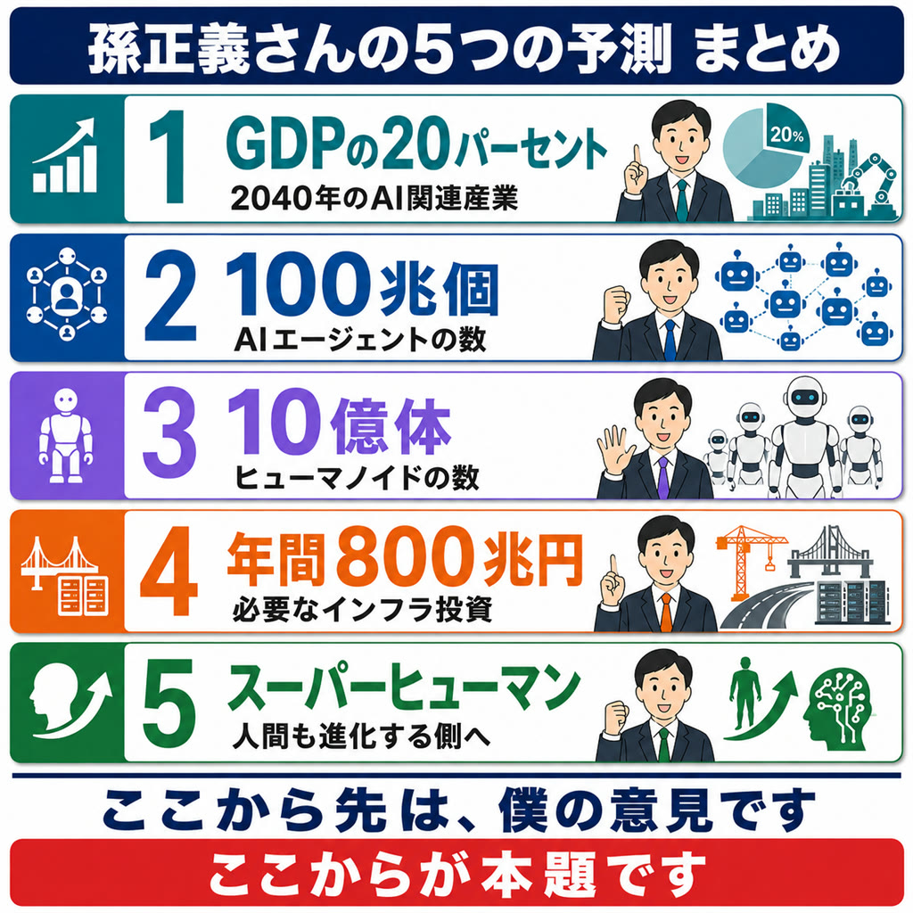
はい、ここまでが孫さんの講演のご紹介です。2040年、GDPの20パーセント、エージェント100兆個、ヒューマノイド10億体、年間800兆円の投資。全部、期限と数字で語られていました。
で、ここから先は全部、僕の意見です。孫さんの話ではありません。ここからが本題なので、ぜひ最後まで聴いていただけたらなと思います。
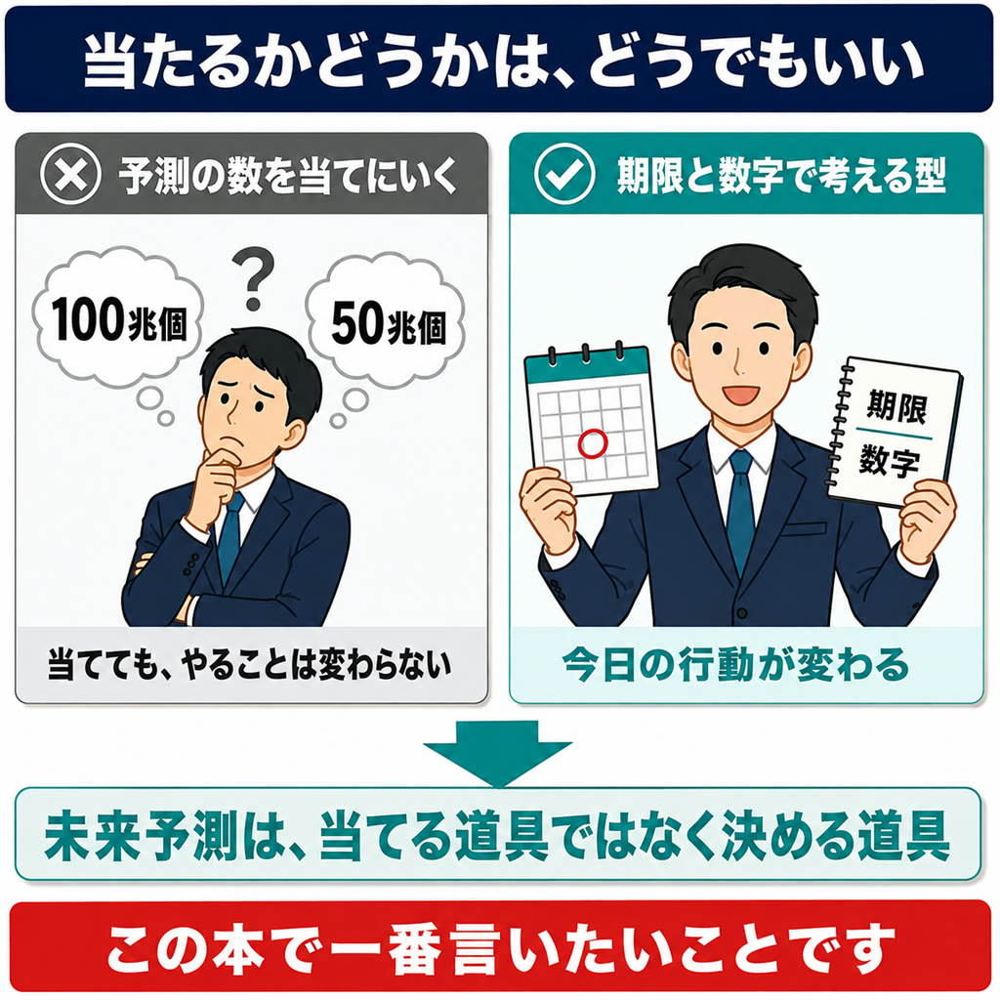
で、いきなり身も蓋もないことを言うんですけれども。この予測が当たるかどうかは、僕ら個人にとっては、正直どうでもいいんですよ。エージェントが100兆個じゃなくて50兆個でも、僕らの明日の仕事は何も変わらないですよね。
じゃあ何が大事なのか。予測の中身じゃなくて、期限と数字で考えるというあの型を、僕ら個人が真似することなんです。これがこの本で、僕が一番言いたいことです。
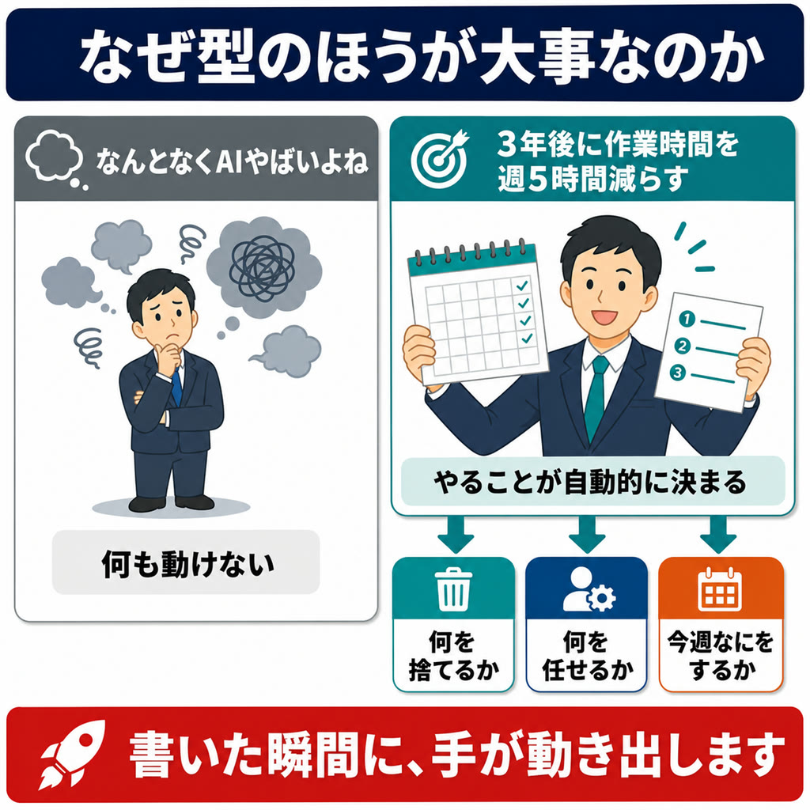
どういうことかというと、僕らの周りって、なんとなくAIってすごいよね、で止まっている人が本当に多いんですよ。それだと何も動けないんですね。でも、3年後に自分の作業時間を週に5時間減らす、みたいに期限と数字で書いた瞬間に、じゃあ何から手をつけるかが自動的に決まるんです。
未来予測って、当てるためのものじゃなくて、今日の行動を決めるための道具なんですよ。そういう使い方をしていただけたらなと思います。
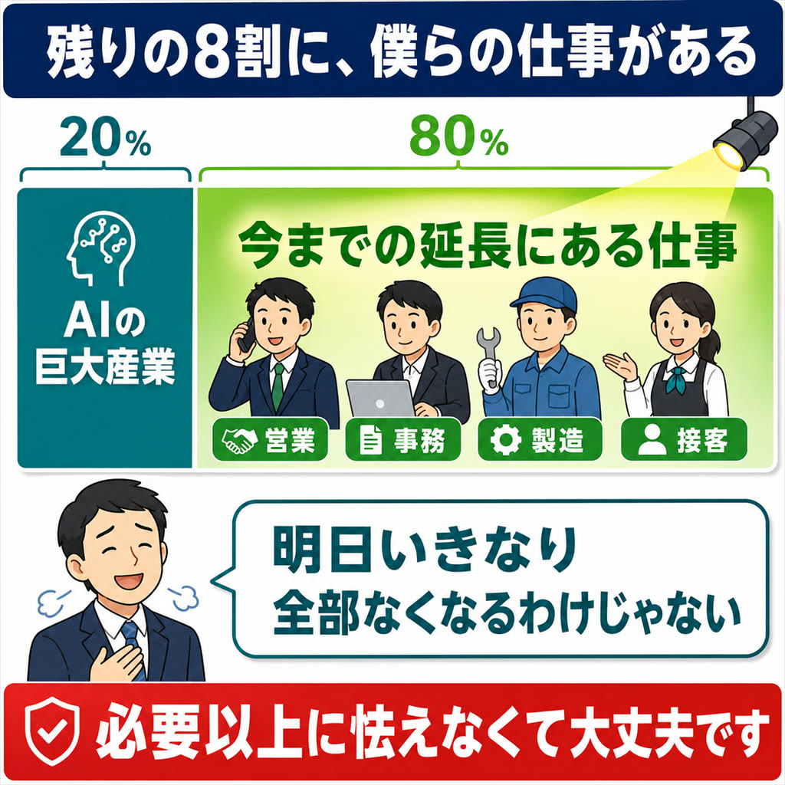
はい、ここでさっきの80パーセントの話に戻ります。AIが世界の20パーセントを取るということは、裏を返せば、残りの80パーセントは今までの延長なんですね。僕らの仕事の大半は、実はこっち側なんですよ。
だからまず、必要以上に怖がらなくていいんですよ。明日いきなり全部の仕事がなくなる、みたいなことにはならないんですね。ここ、安心してもらって大丈夫です。
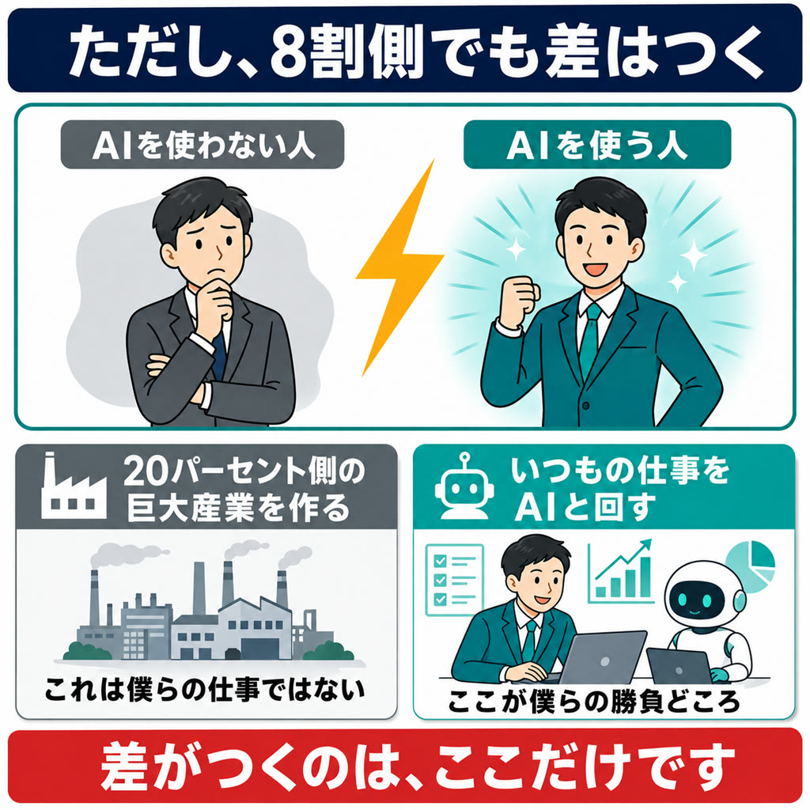
ただですね、ここからが大事なところなんですけれども。同じ80パーセント側にいても、AIを使う人と使わない人で、差はしっかりつきます。というより、そこでしか差がつかなくなります。
さっきの20パーセント側、つまりAIそのものの巨大な産業を作るのは、正直、僕らの仕事じゃないんですよ。あれは孫さんたちの仕事です。僕らの勝負は、いつもの仕事をAIと一緒にどう回すか、こっちなんですね。
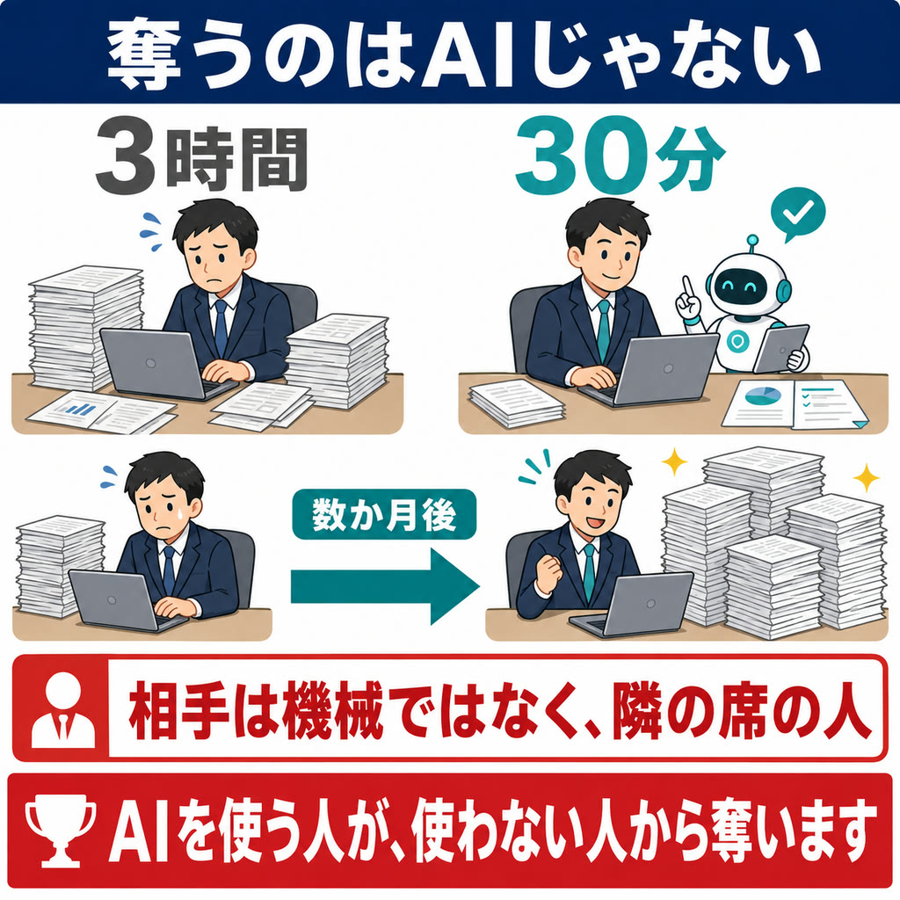
で、よく言われる、AIに仕事を奪われる、という話。あれ、僕は半分ウソだと思っています。正確に言うと、AIが奪うんじゃないんですよ。
AIを使う人が、使わない人から奪うんです。会社で考えると分かりやすいですね。同じ作業を、片方は3時間かけてやって、片方はAIと30分で終わらせる。
数か月後に、仕事がどっちに集まるかという話です。相手は機械じゃなくて、隣の席の人なんですよ。
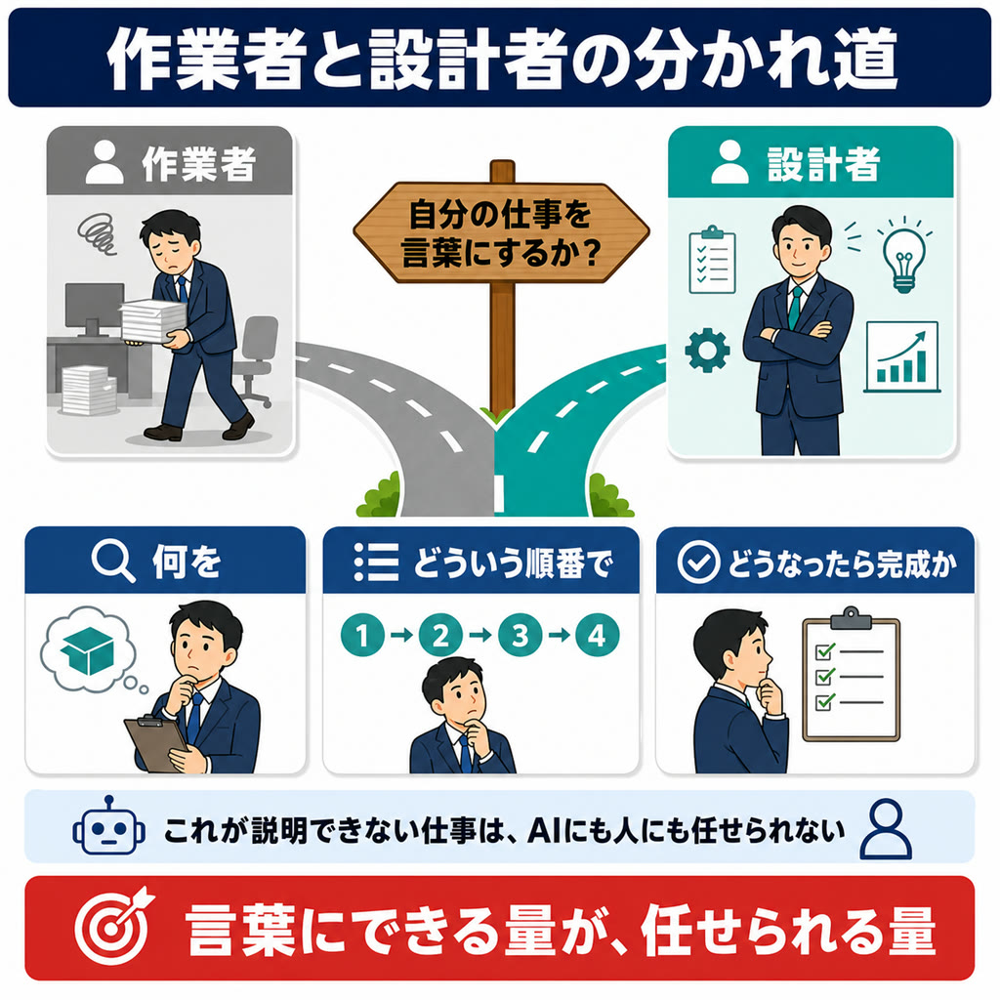
じゃあ、その二人は何が違うのか。才能でもITスキルでもないです。自分の仕事を、言葉にする手間を惜しむかどうか。
これだけなんですね。プロンプトが上手い人って、実は文章がうまいんじゃなくて、自分の仕事を言語化する力が高いんですよ。何を、どういう順番で、どうなったら完成なのか。
これが説明できない仕事は、AIにも人にも任せられないんですね。つまり、自分の仕事をどれだけ言葉にできるかが、そのまま任せられる量になるんですね。ちなみにプロンプトというのは、AIへのお願いの文章、つまり指示書のことなんですよ。
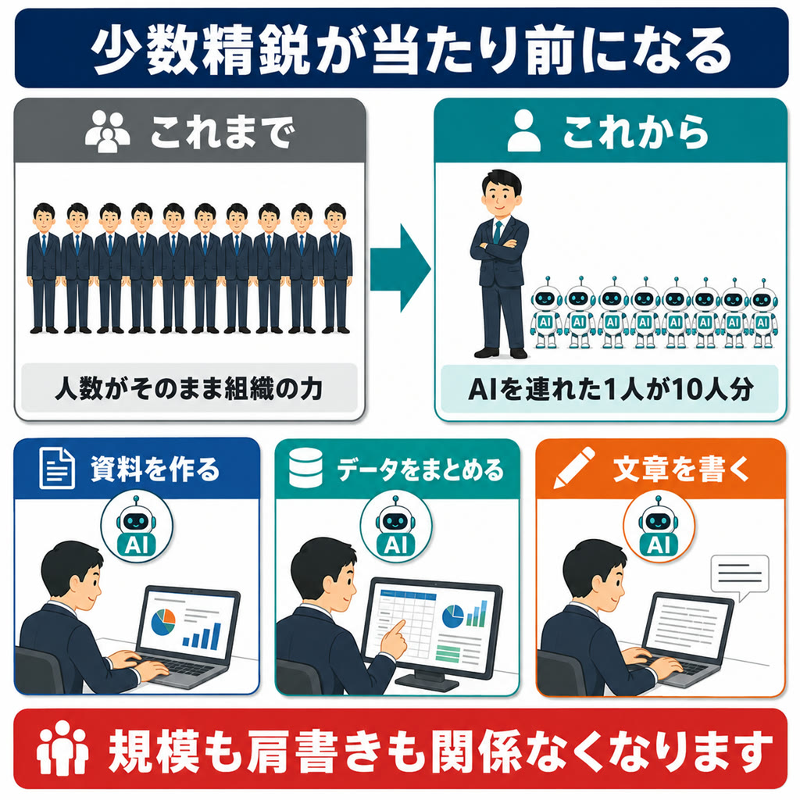
じゃあ、これからの時代がどうなるかというと、僕は少数精鋭が当たり前になると思っています。昔は、大きい仕事をするには大人数が必要だったんですよ。資料を作る人がいて、データをまとめる人がいて、文章を書く人がいて。
人数がそのまま組織の力だったんですね。それがこれからは、10人分の仕事を、AIを連れた1人がやる。これが普通になっていくと思います。
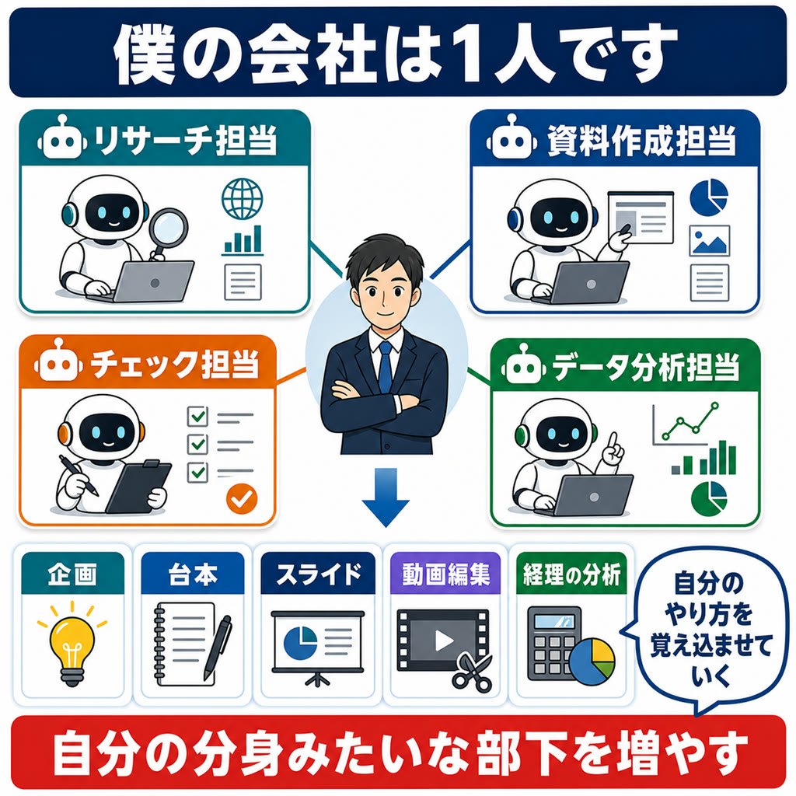
実際、僕の会社って1人なんですよ。1人なのに、YouTubeの企画から台本、スライド、動画編集、経理の分析まで回っています。なんでかというと、僕の後ろでAIのチームが働いてくれているからなんですね。
リサーチ担当、資料作成担当、チェック担当、みたいに役割を分けて、それぞれに僕のやり方を覚え込ませていく。自分の分身みたいな部下を、どんどん増やしていくイメージです。役割を分けるといっても、担当ごとに仕事の手順を書いた紙を渡しておく、みたいなことなんですよ。
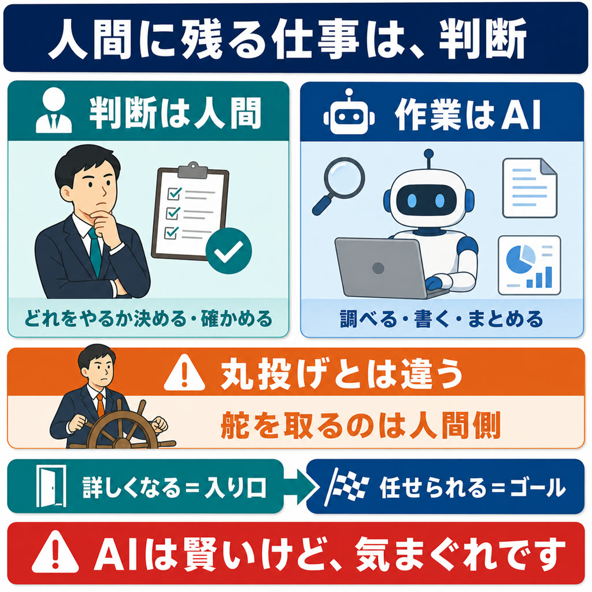
ただし、丸投げとは全然違います。舵を取るのは、あくまで人間側なんですよ。判断は人間、作業はAI。
この線引きが、これから人間に残る、本丸の仕事になります。というのも、AIって賢いんですけど気まぐれなんですね。8割ぐらいの叩き台は一瞬で作ってくれるんですけど、その中身が合っているかどうかは、結局こっちが見ないと分からないんです。
だから、詳しくなるのは入り口で、任せられるのがゴールなんですね。気まぐれというのは、同じことを聞いても、毎回ちょっと違う答えが返ってくるということですね。
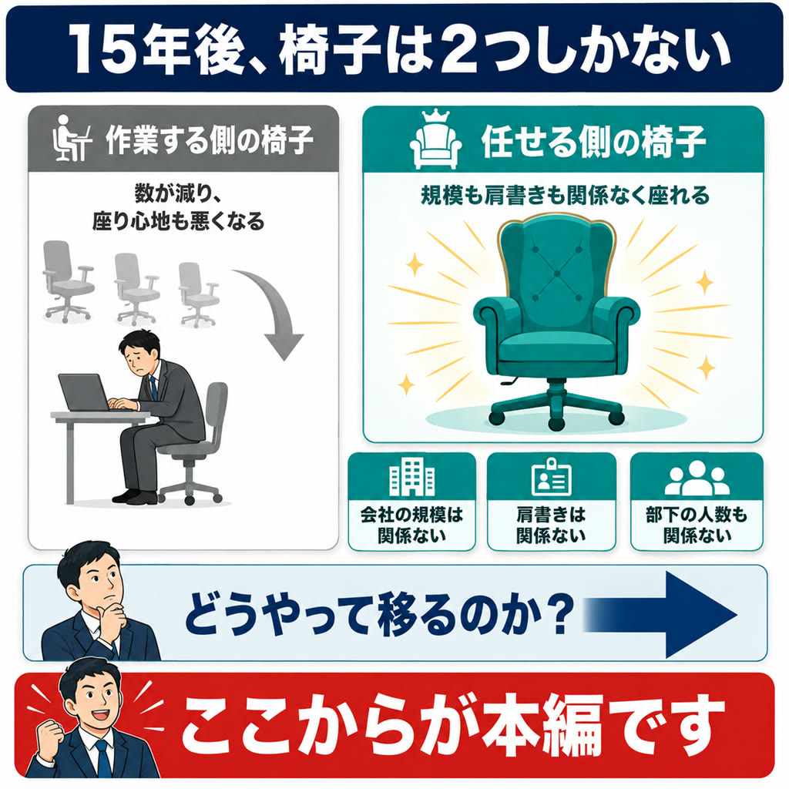
で、第2部のまとめです。15年後、僕らが座れる椅子は、大きく2つしかないと思っています。ひとつは、作業する側の椅子。
もうひとつは、任せる側の椅子です。作業する側の椅子は、これから確実に数が減って、座り心地も悪くなっていきます。逆に、任せる側の椅子は、会社の規模も肩書きも関係なく、誰でも座れるようになります。
じゃあ、どうやってそっちに移るのか。ここから具体的な話をしていきます。
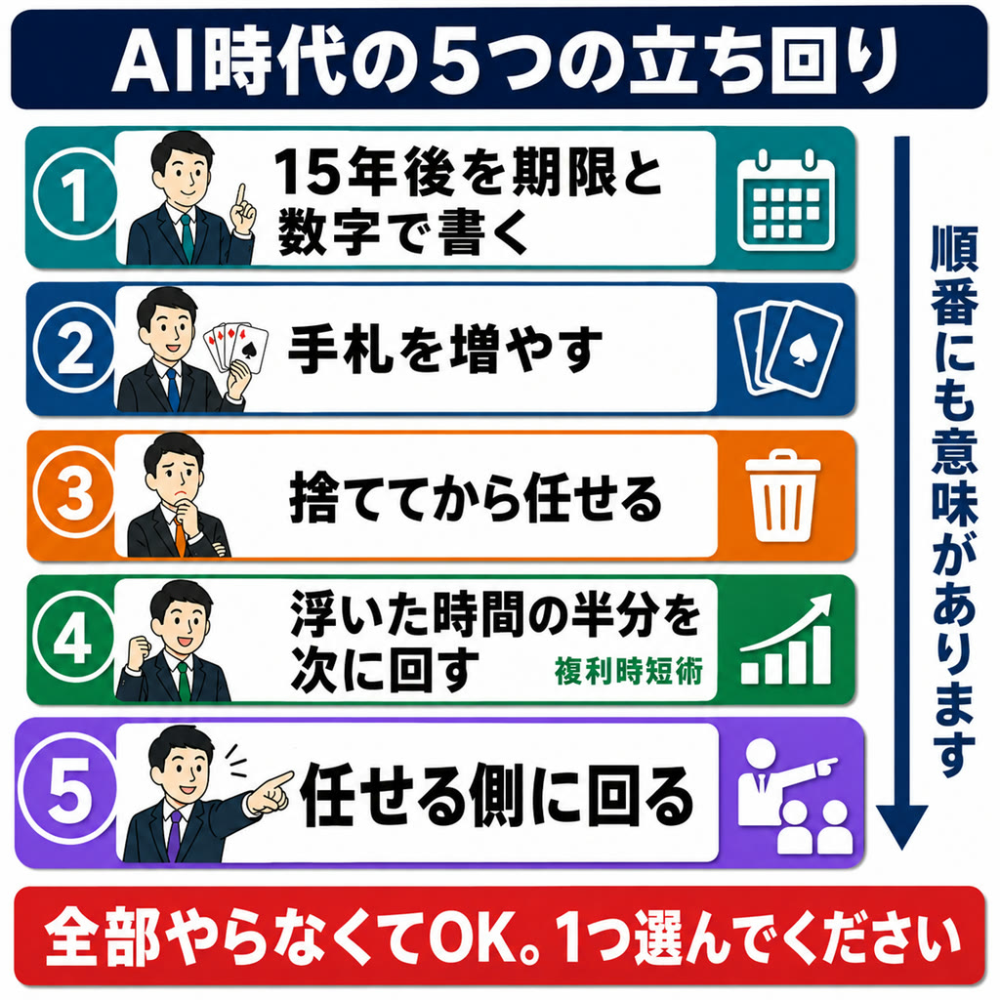
ここから、僕が10年かけてたどり着いた、AI時代の立ち回りを5つお伝えします。一つ目、15年後を期限と数字で書く。二つ目、手札を増やす。
三つ目、捨ててから任せる。四つ目、浮いた時間の半分を次に回す、複利時短術。五つ目、任せる側に回る。
この5つです。順番にも意味があるので、上から順にいきましょう。
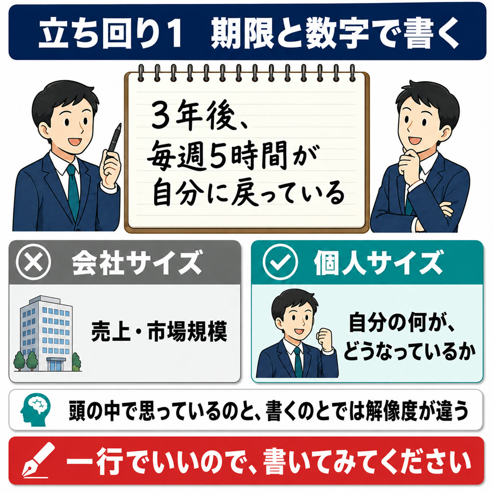
まず一つ目。孫さんの話から一つだけ真似してほしいのが、この型なんですよ。15年後の自分を、期限と数字で書いてください。
ただし、会社サイズじゃなくて、個人サイズにします。売上とか市場規模じゃなくていいんですよ。何年後に、自分の何が、どうなっているか。
これを一つでいいので、実際に書いてみてほしいんですね。頭の中で思っているのと、書くのとでは、解像度が全然違います。解像度というのは、どれだけはっきり見えているか、ということですね。
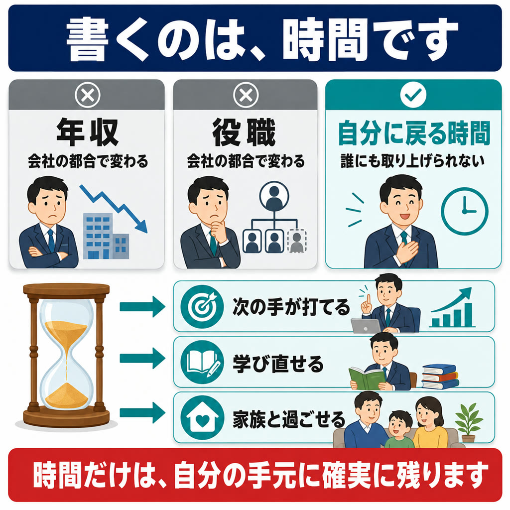
僕がおすすめしたいのは、年収でも役職でもなくて、時間で書くことです。3年後、毎週5時間が自分に戻ってきている。こういう書き方ですね。
なんでかというと、年収や役職って、会社の都合でどうにでも変わってしまうんですよ。でも、自分の作業時間を減らしたという事実は、誰にも取り上げられないんですね。しかも、その時間があれば次の手が打てます。
時間だけは、自分の手元に確実に残るんですよ。
二つ目は、手札を増やす、ですね。これ何かというと、使える道具の枚数のことですね。よくあるのが、AIといえばこれ、という1枚しか持っていないパターンなんですよ。
で、その1枚が会社で使えない瞬間に、終わっちゃうんですね。会社によって環境って全部違うじゃないですか。外部のAIが禁止の会社もあれば、ソフトを入れられないパソコンもある。
だから、枚数がそのまま生き残る力になるんです。まず1枚目は、皆さんの会社で使えるAIで大丈夫ですよ。そこから増やしていけばいいんです。
もう一つ大事なのが、覚えるのは道具じゃなくて型だ、ということなんですよ。皆さんがこの本を聴いている頃には、もっと新しいAIが出ているかもしれません。でも心配しなくて大丈夫です。
名前が変わっても、役割を分けて、知識を入れて、任せる、という根本は変わらないので。手札を増やして、環境に適応する。この力が、AI時代にかなりつぶしが効くスキルかなと思います。
知識を入れるというのは、社内のルールとか過去の資料を、先に読ませておくことなんですね。
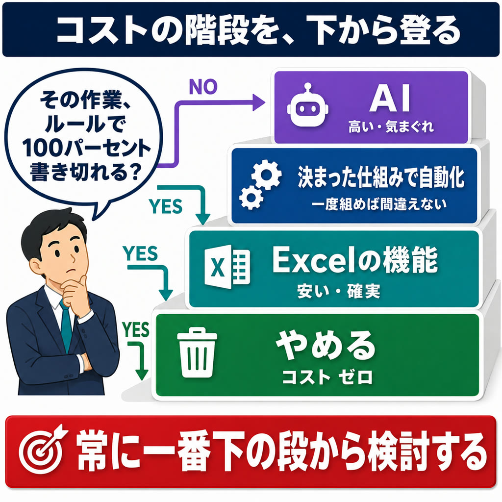
で、手札が増えてくると、次はどれを使うかという話になります。ここで僕が使っている判断がひとつあって、安いものから順番に試していく、コストの階段って呼んでいます。見分け方は、質問ひとつでOKです。
その作業、ルールで100パーセント書き切れますか、と。書き切れるなら、AIじゃなくて決まった仕組みに任せます。そのほうが安いですし、毎回きっちり同じ結果になるので。
書き切れない、判断とか文章が要る部分にだけ、AIを使うんですね。決まった仕組みというのは、Excelの関数やマクロみたいに、毎回きっちり同じ動きをするやつのことですね。
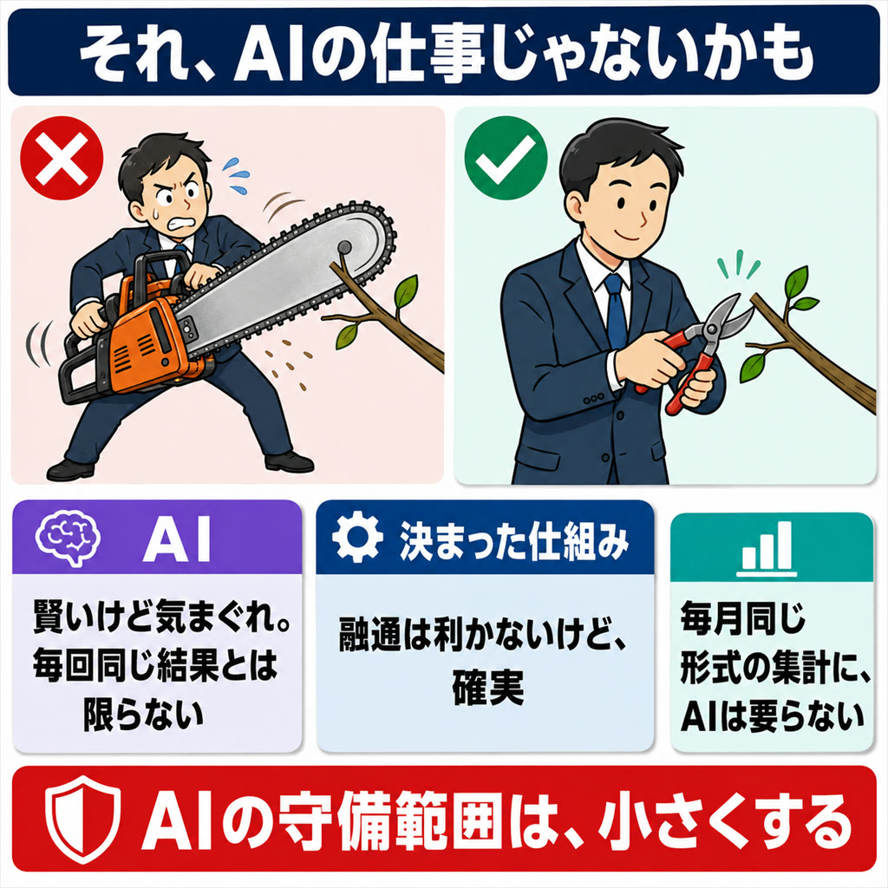
どういうことかというと、さっきも言ったとおり、AIは毎回同じ結果になるとは限らないんですよ。逆に、決まった仕組みは融通が利かないけど、確実です。毎月同じ形式のデータを集計するだけの作業に、わざわざAIを使うのって、枝を1本切るのにチェーンソーを持ち出すようなものなんですね。
AIの守備範囲は、できるだけ小さくする。これがコストを一番下げるコツです。
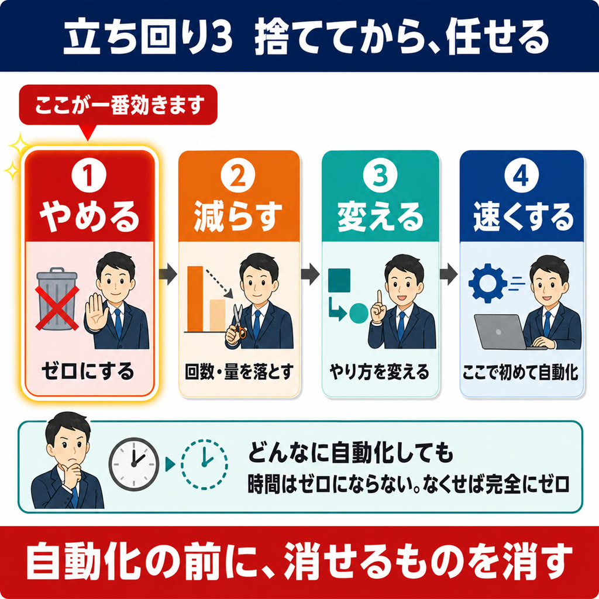
三つ目です。皆さん、ムダな作業を見つけると、すぐ、これどう自動化しようかな、って考えちゃいませんか。でも、その一歩手前がめちゃくちゃ大事なんですよ。
順番はこうです。やめる、減らす、変える、速くする。この順番です。
どんなに頑張って自動化しても、かかる時間はゼロにはならないんですね。でも、作業そのものをなくしちゃえば、完全にゼロです。ツールもAIも要りません。
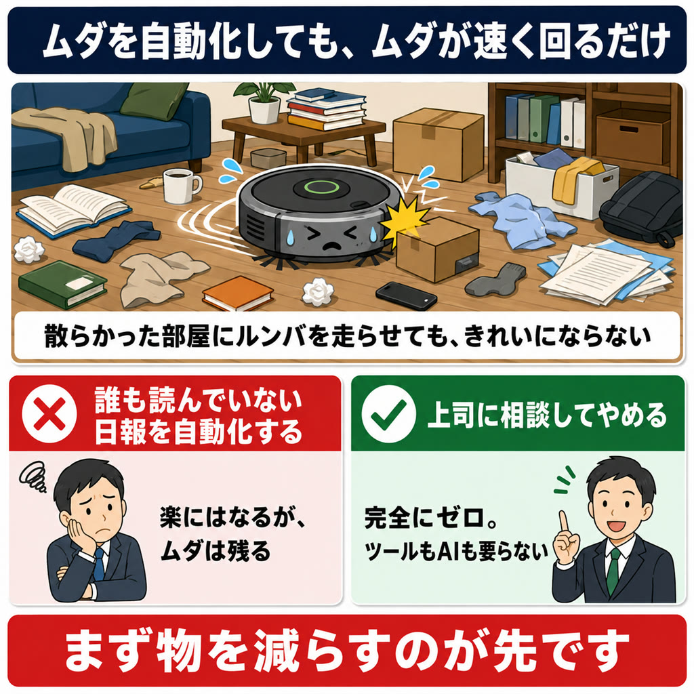
例えば、誰も読んでいない日報。これを自動化したら確かに楽にはなりますけど、そもそも誰も読んでいないなら、上司に相談してやめちゃうのが正解なんですよ。散らかった部屋にルンバを走らせても、きれいにはならないですよね。
まず物を減らすのが先なんです。ムダを自動化しても、ムダが速く回るだけ。これ、覚えておいてください。
AIを入れる前に、消せるものを消す。ここが結構効くんですよ。
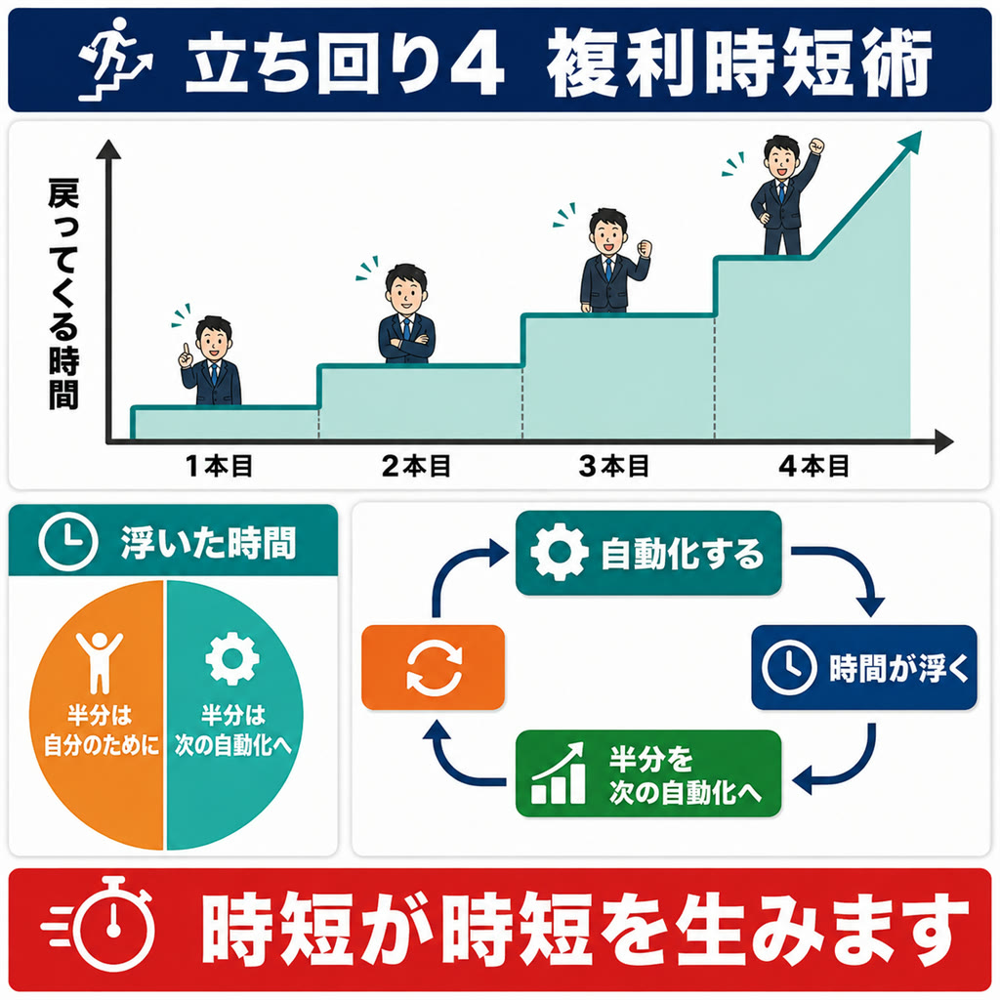
四つ目です。これは僕が勝手に、複利時短術と呼んでいるものなんですけれども。自動化で時間が浮くじゃないですか。
そのとき、浮いた時間の半分を、次の自動化に投資してほしいんですね。全部を休みに使ったり、全部を別の仕事で埋めたりすると、そこで止まっちゃうんですよ。半分だけ次に回す。
すると、時短が時短を生んで、利息にまた利息がつく複利みたいに、どんどん増えていくんですよ。
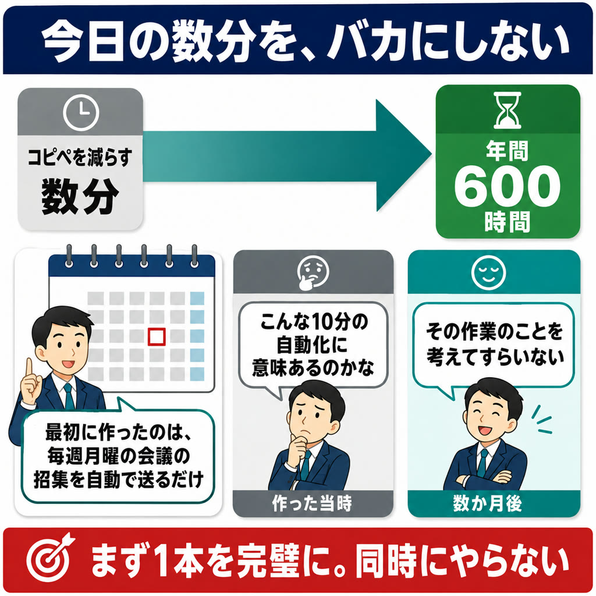
で、大事なのが、あれもこれも同時にやらないことです。まず1本を、最後までやり切る。それだけでいいです。
僕の年間600時間も、最初はコピペを減らす、たった数分から始まったんですよ。最初に作ったのは、毎週月曜の会議の招集を自動で送るだけのものでした。正直、こんな10分の自動化に意味あるのかなと思っていました。
でも数か月後には、その作業のことを考えてすらいない状態になっていたんですね。
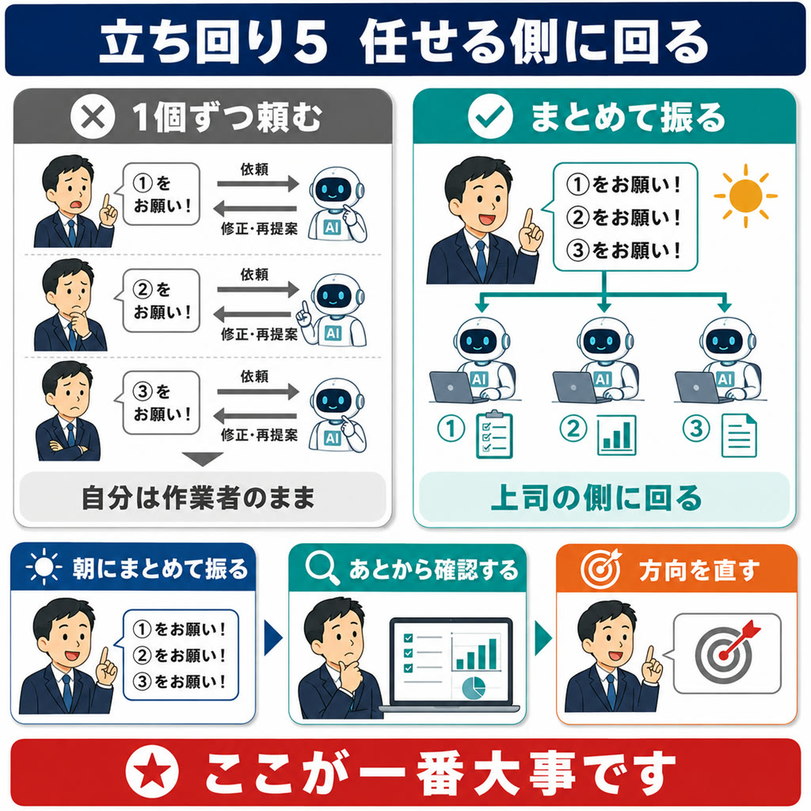
五つ目、最後です。任せる側に回る、ということですね。多くの人がやってしまうのが、AIに1個頼んで、出てきたものを直して、また1個頼む、というやり方なんですよ。
これ、実は自分が作業者のままなんですね。そうじゃなくて、朝にまとめて仕事を振って、あとから確認して方向を直す。上司の側に回るんです。
ここ、めちゃくちゃ大事なので、必ず覚えておいてください。
参考までに、僕の朝はこんな感じです。朝いちでAIに、リサーチはこれ、資料の下書きはこれ、データの集計はこれ、とまとめて指示を出します。で、コーヒーを淹れて戻ってくる頃には、それぞれがそれなりの形になっているんですよ。
僕はそれを確認して、判断して、仕上げるだけ。1人なのに、3つ4つの仕事が同時に進んでいく。これ、もう部下がいるのと変わらないんですね。
同時といっても、チャットの画面を3つ開いて、1個ずつ頼んでおくだけなんですよ。
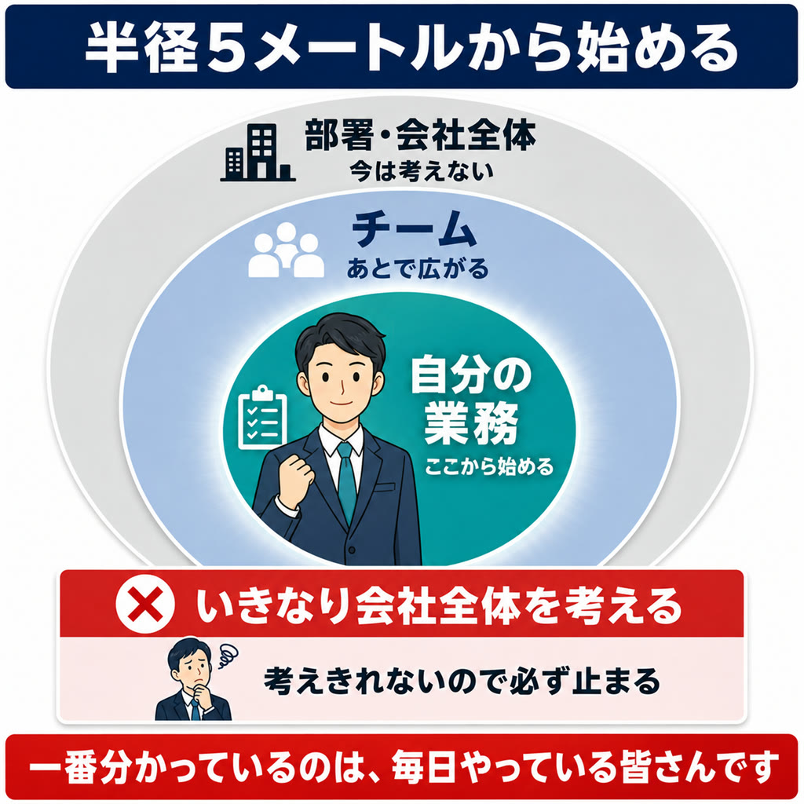
で、ここで一つ注意なんですけれども、いきなり会社全体とか、部署全体を考えないでください。考えきれないので、だいたい途中で止まっちゃいます。まずは自分の半径5メートル、つまり自分の業務だけでいいです。
業務を一番分かっているのは、IT部門でもAIでもなくて、毎日それをやっている皆さんなんですよ。だから、皆さんが作るのが結局早いんですね。小さく始めて、実力を積むほうが結果的に近道です。
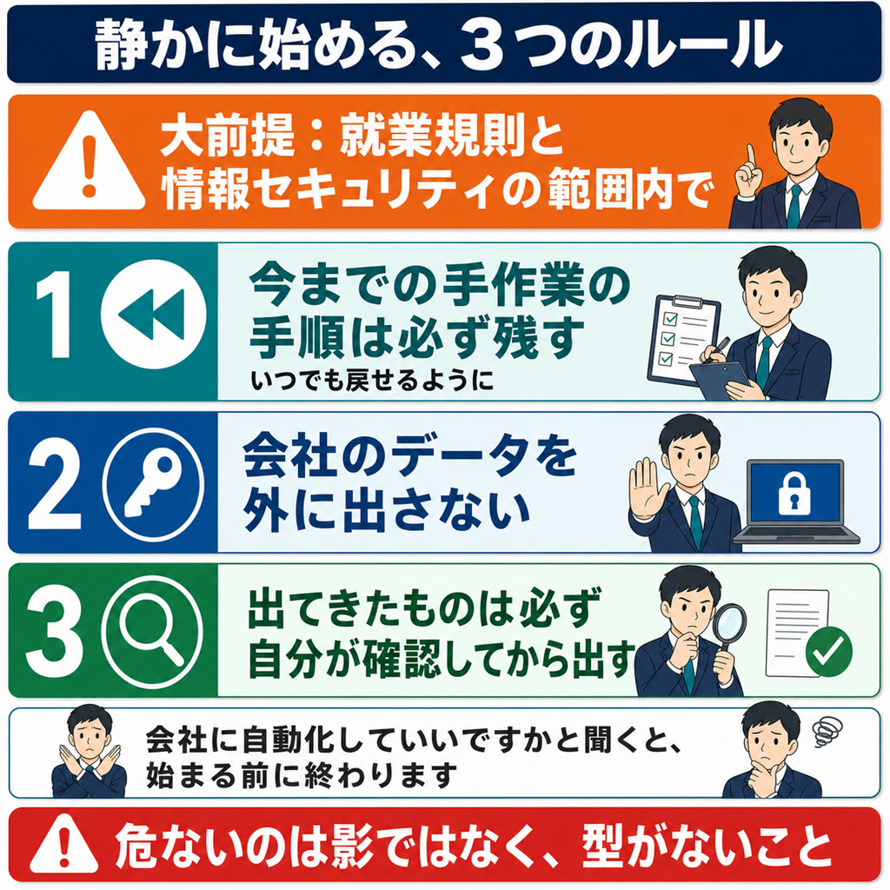
あとですね、会社に、自動化していいですか、と聞くと、だいたい始まる前に終わります。なので僕は、自分の裁量の範囲で静かに始めることをおすすめしています。ただし、就業規則と情報セキュリティの範囲内で、というのが大前提です。
その上で、ルールが3つあります。一つ目、今までの手作業の手順は必ず残しておくこと。二つ目、会社のデータは外に出さないこと。
三つ目、出てきたものは必ず自分が目を通してから提出すること。外に出さないというのは、お客様の名前とか社内の数字を、そのまま貼り付けないということですね。
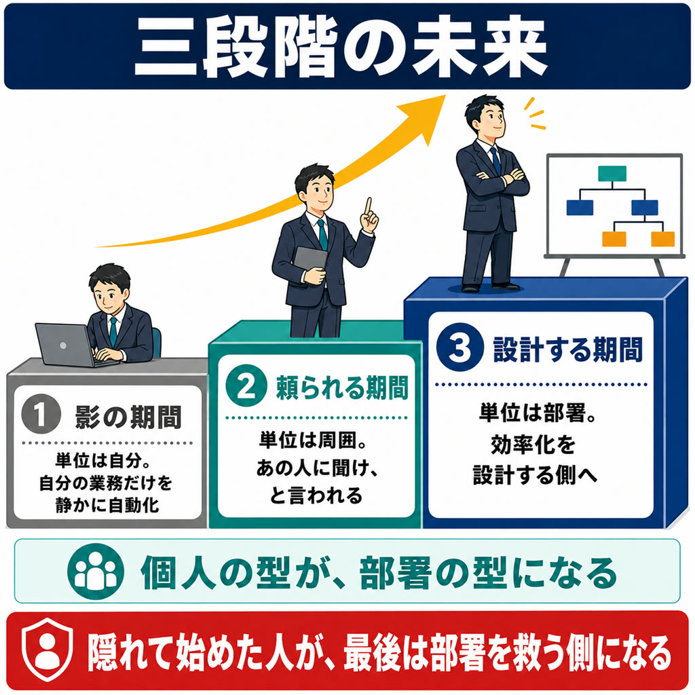
はい、それを続けていくと、だいたい三段階で景色が変わっていきます。第一段階は、影の期間。自分の業務だけを静かに自動化して、時間と実力を積む時期ですね。
第二段階は、頼られる期間。成果は隠しきれなくなって、あの人に聞け、と言われるようになります。第三段階は、設計する期間。
部署全体の流れを見て、効率化を設計する側になります。個人の型が、部署の型になっていくんですね。
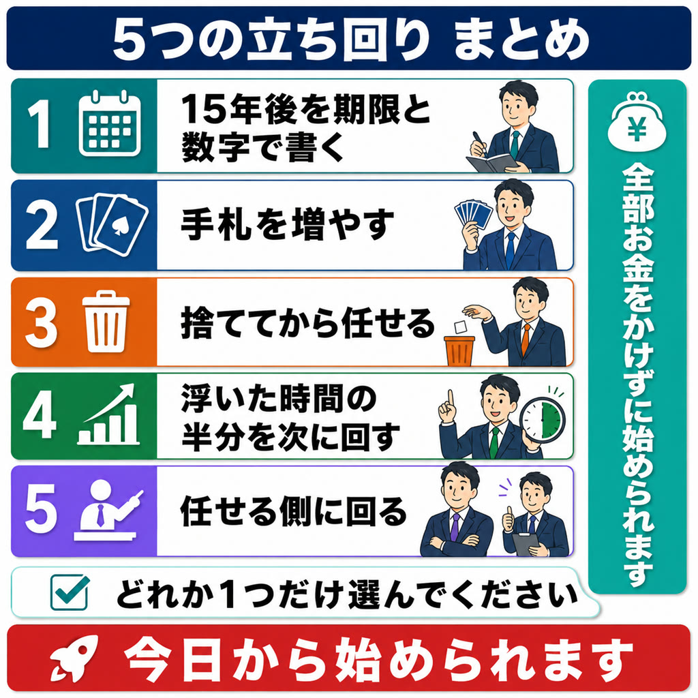
はい、ここで5つをもう一度まとめますね。一つ目、15年後を期限と数字で書く。二つ目、手札を増やす。
三つ目、捨ててから任せる。四つ目、浮いた時間の半分を次に回す。五つ目、任せる側に回る。
この5つです。どれも今日から、お金をかけずに始められるものばかりなんですよ。全部やらなくていいので、どれか一つだけ選んでみてください。
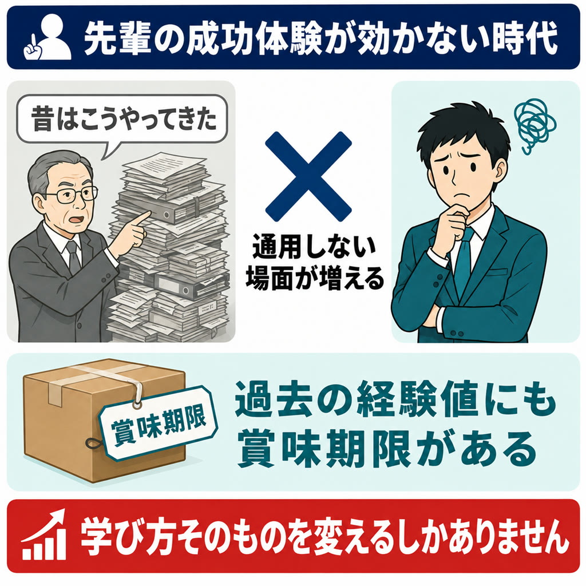
はい、ここから最後のパートです。この先の15年で、僕が特に気をつけたほうがいいと思っているのが、過去の経験値の賞味期限なんですよ。孫さんも講演の最後で、これからは人類が経験したことのない世界に行くので、過去の経験値はあまり役に立たない、という話をされていました。
これ、僕らのレベルでも同じです。先輩がこうやってきたから、が通用しない場面が確実に増えます。
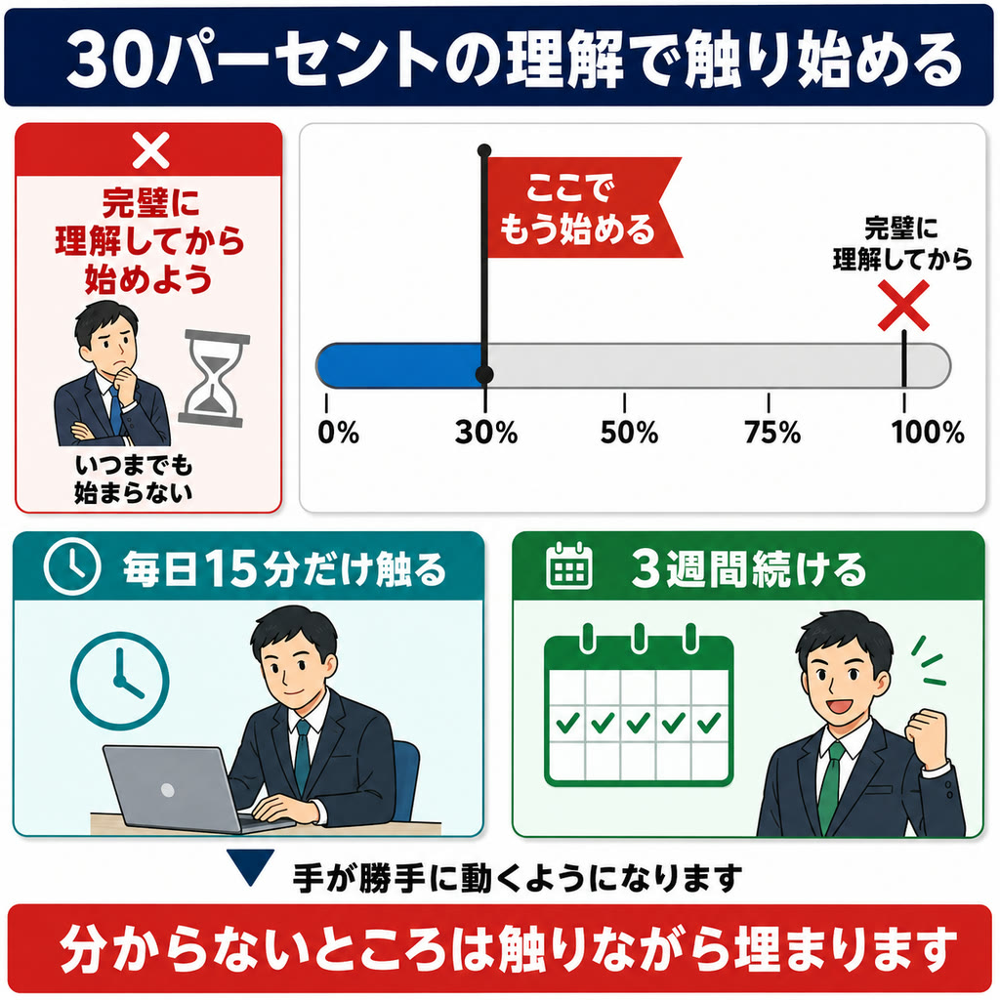
じゃあどうすればいいかというと、学び方そのものを変えるしかないです。完璧に理解してから始めよう、という人は、正直いつまでも始まらないです。30パーセントぐらい分かったら、もう触り始めちゃってください。
分からないところは、触りながら埋まっていきます。おすすめは、毎日15分だけ触ると決めることですね。3週間続くと、だいたい手が勝手に動くようになります。
触るのは、皆さんの会社で使えるAIひとつで十分ですよ。今日やった仕事を、そのまま聞いてみてください。
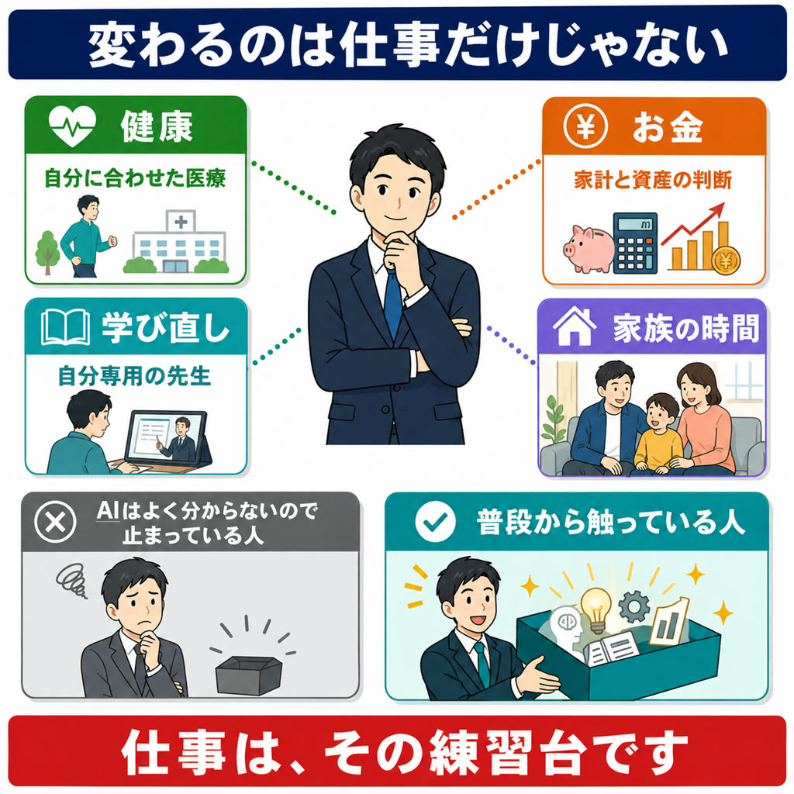
あとですね、これから変わるのは仕事だけじゃないです。健康とか、お金とか、学び直しとか、生活全体にAIが入ってきます。孫さんの講演でも、自分に合わせた医療が当たり前になっていくという話がありました。
そのときに、AIってよく分からないから、で止まっている人と、普段から触っている人とでは、受け取れるものが全然変わってくると思うんですよ。だから、仕事はその練習台だと思ってください。
最後に、僕がずっと大事にしている言葉を紹介させてください。時間を取り戻し、あなたの理想の実現を加速する。AIも自動化も、全部道具にすぎないんですよ。
本当に手に入れたいのは、その先の時間です。家族と笑う時間とか、学び直す時間とか、挑戦する時間ですね。幸せかどうかって結局、自分の時間を自分で使えるかどうかだと僕は思っています。
自分と向き合う時間がないと、あれ、何のために働いてるんだっけ、ってなっちゃうので。
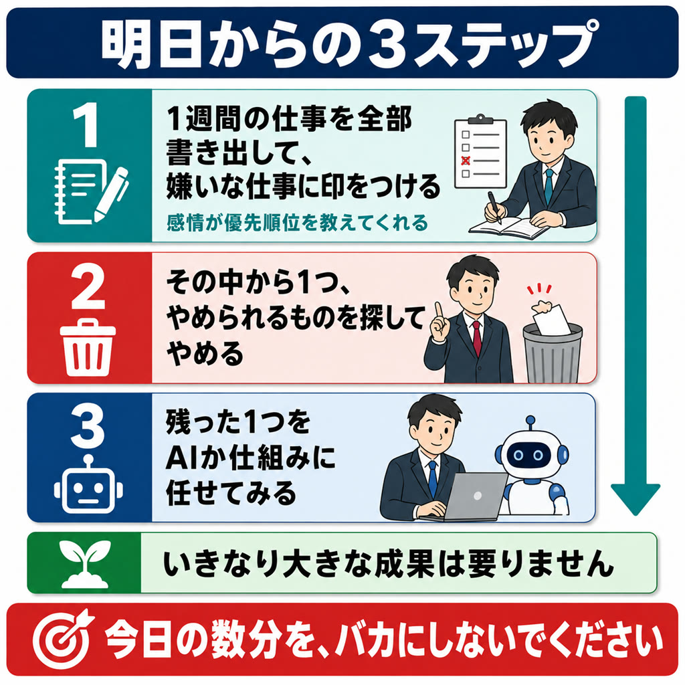
で、明日から何をするかですけれども、3つだけです。一つ目、自分の1週間の仕事を全部書き出して、嫌いな仕事に印をつける。嫌だなと思う作業ほど、実は改善のネタなので。
二つ目、その中から1つ、やめられるものを探して、やめる。三つ目、残った1つをAIか仕組みに任せてみる。これだけです。
いきなり大きな成果は要りません。今日の数分を、バカにしないでください。任せ方は簡単で、その作業の手順を書き出して、そのままAIに渡すだけでいいんですよ。
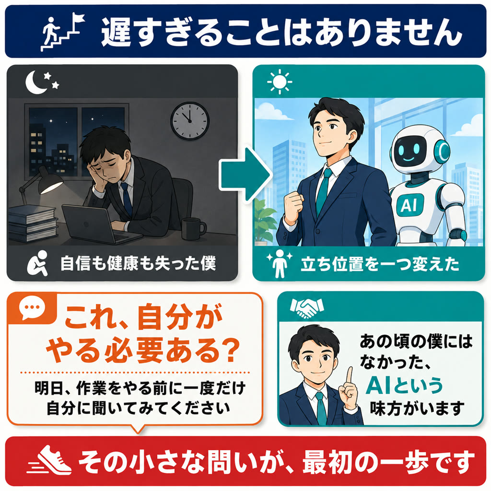
僕は、自信も健康も失ったところから、立ち位置を一つ変えて、人生を立て直しました。なので断言できます。今がどんな状態でも、遅すぎることはありません。
しかも皆さんには、あの頃の僕にはなかった、AIという最強の味方がいるわけです。明日、目の前の作業をやる前に、一つだけ自分に問いかけてみてください。これ、自分がやる必要あるかな、と。
その小さな問いが、最初の一歩です。
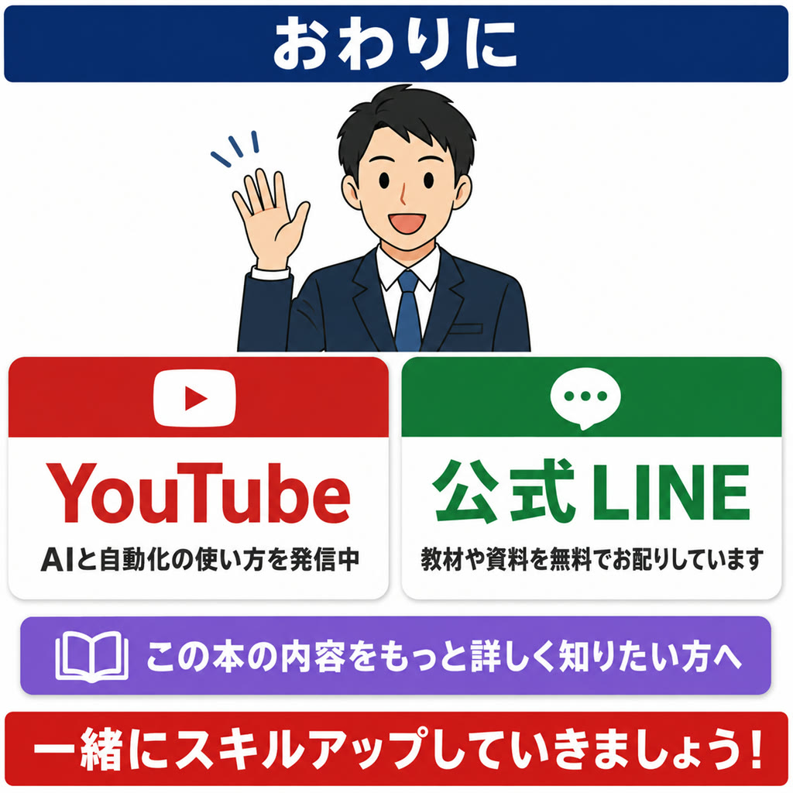
はいということで、今回の電子書籍は以上になります。ここまで聴いていただいて、本当にありがとうございました。この本の内容をもっと詳しく知りたい方は、YouTubeのほうでもAIと自動化の使い方を発信していますので、よかったら覗いてみてください。
それから、公式LINEでは、こういった教材や資料を無料でお配りしています。それでは、一緒にスキルアップしていきましょう。お疲れ様でした。